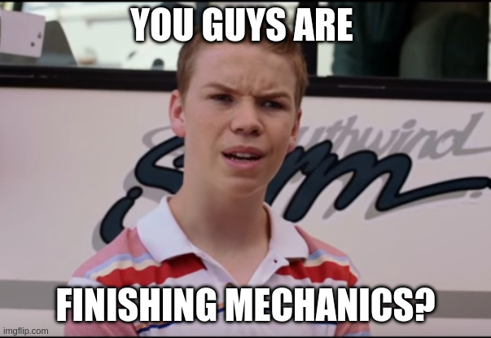

Hi. I'm Vex, otherwise known as AoAlfaric.
I'm the CE-... Main character at NSFO 😎
I'm not a professional in any of the sanitized ways.
Don't expect these answers to be :D
My Ardron realm is Grimlowe 👉😎👉
I'm going to split this into... general Dev questions.
and then some "Get to know me" questions c:
ENJOY!
~Dev Questions~
What got you into game development?
Oh damn, this is a story.
gonna get real personal real fast.
So. I always thought I'd be a video game TESTER. because... I wanted to "fix" games.
Turns out I'm doing just that... Fixing games. Just by....... making my fucking own.
So basically my lifes been real hell up to like... ok it never stopped BUT. i never had *time* to sit down and work on games.
Until I was homeless (a choice of mine, better than living with my parents tbh. Awful people.)
I had all the time, but no technology to do so.
So... Notebooks and pencils it was. This was around the time Ardron was created. It wasn't even a game. Just kind of a safe space 🤨?
like i said long story. BUT yeah. That.
And then through the years shit went down. I found out that making Arcane Titans was going to be hell so... Digital time.
:V Programmer now.
What's your favorite part of making games?
You ever like half assedly throw a piece of trash away, and it bounces off 18 things, and STILL makes it in the fuckin trashcan?
Yeah.
That.
I'll make one mechanic or system.
Go to fuckin work on something COMPLETELY unrelated, and it just... it's already slotted in, and it works. just me with changing 1 character in a line of code.
Dumb. I love it.
But it aint even that. The journey is hella worth more than the end goal.
What's your least favorite part of making games?
Data entry. fuck copy pasting things that already exist, and changing the format its in. I hate it.
What games have influenced the way you design games?
Aw FUCK. Shit dude I don't know.
UHHHHHHHHHHHH there isn't one.
dude my game design is fuckin weird. AoA has over 200 inspirations that have nothing to do with AoA.
I stole a mechanic from Dead By Daylight....and put it in a TTRPG 🤨 do youknow how bizzare that is?
Each game is a carefully crafted frankenstiens monster of an amalgam.
I mean you could look at Arcane Titans and go "obviously thats obviously inspired by Magic:The Gathering" or
look at Ashes of Arcanum and go "yeah, it's inspired by D&D", but that's such a cop out.
I could say Graces Lament is inspired by castlevania, but its more the *feeling* of Castlevania. not any specific mechanics.
Idk. Thats a hard question :v
What's your general philosophy when designing a game?
1. Take cool idea
2. compare it agains the universes lore.
2a. Does it make sense in the lore? → if yes: Move onto 3, If not: Scrap that shit.
3. Does it fit the game genre?
3a. Objectively? If no: scrap, If yes: move to 3b
3b. Subjectively? Will a majority people like this addition? If yes: move to 4, if no: move to 3c.
3c. ok. Fuck people. Will a niche group of people appriciate this idea? If no. Scrap it. If yes. Move to 4.
4. What systems does it interact with?
4a. After determining what it interacts with. consider work load. If its massive. scrap, if its not move to 5.
5. Temper priority. move to 5a
5a. what needs done first before implementation? the answer to this might affect 4a. re-evaluate at implementation time. if its high priority. move to 6. else. wait for re-evaluation.
6.If this was implemented. Would taking it out of the game make the game actively worse?
6a. If yes, Keep it, Move to 7. If no. reconsider. go back to 3.
7. put cool idea into game.
What makes a game good to you?
Well that's just impossible to answer. What is "good"?
Is it fun? Yeah. Games like Remnant are fun, but is it "Good"? fuck no.
Is it competent/consistant? yeah? Then it's probably like a fuckin video game spreadsheet. no thanks.
I need a game i can get immersed in, but doesn't waste my time. A game that challenges me intellectually, but isn't just trying to be smart.
A game that respects my effort, but doesn't let me become so overpowered that i might as well be playing with cheats.
that is a very small number of games.
What's something you're weirdly picky about when designing games?
Well if my general philosophy wasn't any fucking indication. uh.
....... EVERYTHING?
What's a game mechanic or design trend you can't stand?
Well one. Copying games without improving them.
Did we really need 500 compies of vampire survivors? Do we really need 194351 "totally not D&D 5e" TTRPG's on drivethruRPG? no.
Stop it. Get some help.
A mechanic? Mixing opposite genres.
A fucking racing game does not need TCG mechanics god damnit quit it.
What's a game mechanic you'll defend until the day you die?
Turn based decisions/combat.
i..... i had a fucking novel that took up over 3000 pixels of height... >.> not keeping that.
If you don't like/can't accept turn based? Skill issue.
Where do most of your game ideas come from?
... 🤷 beats the absolute piss out of me.
I wish i could say other games, or movies or something. but nah.
Like. I spun the lid off my drink and randomly had the epiphony of "...what if you could charge spells in AoA like a kamehameha"
One could argue that the idea came from Dragon ball, but no that's just the analogy/reference I used to explain it.
I wasn't thinking of Dragon ball. I was just fuckin thirsty, and welp. Now AoA spells are changed forever.
Do you plan everything out, or figure shit out as you go?
Yesn't
What's usually the hardest part of turning an idea into an actual game?
*Sigh*
Go read that. Get back to me.
Now. Go back and read 2 answers up. about the fucking game ideas.
Realize this happens 86000 times a day.
Softly weep.
What's something players probably don't realize is ridiculously hard to make?
You mean besides a whole fucking video game?
Correction. Making a video game is EASY.
You can open youtube. copy tutorials. steal artwork*cough* use free music. shit yourself out an arcade game in a couple weeks. who cares.
YOU WANNA MAKE A GAME WITH OVER SEVENTY TWO THOUSAND INTERTWINED AND INTERCONNECTED SYSTEMS WITH ORIGINAL ART, MUSIC, AND UI?
fuck yourself.
Making a good game is a sisyphean task. You always ask "Is it /really/ done? ...one more mechanic".
and then you fucking do that, and because of all the shitheads using AI, and slop ass asset flips and bullshit on steam?
Your game gets BURIED, and will get 3 wishlists until you go 90% on sale, and you'll sell one copy becuase someone saw "sex with hitler 2"
and decided that was a better use of their money than some random game dev no ones heard of before.
(The majority of games make less than 800$. Don't do game dev for money kids.)
and no :D i'm not bitter about this. i'm just being realistic. I don't make games for money. I make them to give people experiences.
Only reason I charge 10$ on steam is because if you're game is 0$ it wont get pushed by steam. so. >less people see it.
🤷
What's something you've made that you're particularly proud of?
*Gestures at everything*
You see that fuckin matrix spoofed background? yeah that shit was hard. Didn't half ass it. looks random. Isn't.
What's something that seemed easy to make and turned into a fucking nightmare?
Probably all of Nullsuite
I had a bunch of scripts hangin around, i figured "I'll take it seriously, combine them, and make it work better, quick week or so".
HAH. shit took three fuckin months. 😒
Specially when i later found out, one program i made for it already EXISTED, so a;lskdjfl;kasjdfalks;djf.
How do you decide when a mechanic is actually done?

If its good, it's never done.
If it is done, something somewhere else will make you touch it again.
So it's never done.
What do you do when a mechanic sounds good on paper but sucks in practice?
... Fix it?
If it wasn't a good fit in the first place. it wouldn't make it past the design philosphy 🤷
Learned that the hard way with AoA. Have a fucking implementation system.
How much do you let player feedback influence your designs?
Probably a lot.
Like 🤦 gamers are fucking stupid. They can calculate how much damage they need to kill something without seeing its HP value, and get it down to the millisecond.
OR
Have frame perfect inputs, and with fighting game tournyments.
BUT... game DESIGN?
I get better game design out of my cats than most gamers.
It's not due to a lack of trying, they just... usually don't understand wtf they're talking about.
BUT when someone has a complaint or suggestion, I do usually listen.
Like if it's a complaint...there is a pain point there somewhere, but is the complaint due to the *game*, or is it just their *preferences*.
i'd say 9/10 times its preferences.
Suggestions are always up the wall, usually huge time sinks, and get tossed due to the design philosphy up there 🤷
but I have had good ideas come from weird fuckin sources before so. I'm always open to it. I just don't let my brain fall out.
What's one thing you refuse to compromise on when making a game?
Well if its about Ardron Universe?
Changing the lore.
NOW SOME OF YOU KEEN ONES will notice the lore has changed, but that wasn't a "Change" it was a correction.
Truth be told, (relating to my first answer) I've lost a lot of my notes from when i was homeless, some are in the basement
Sometimes i find a notebook in a weird fuckin place, and go "OH...yeah that makes MUCH more sense" and update the lore accordingly.
*COULD* I just go "yeah the old stuff is bad, were usin the new stuff now". yeah. I could, but i'm also not a little bitch,and i have some semblence of integrity.
This is why i like to say "Even I don't know all the lore", because I don't. I mean I do. but i also *dont* yaknow?
I know what I know to the best of my ability. If the model is updated? I update the lore thats public 🤷
oh.... and money. I won't take money to change my games/universes/works.
If time, money, and technical limitations didn't exist, what game would you make?
Bitch do i look like time,money, and technical limitations are stopping me NOW!?
Fucking money got in the way of physical cards for Arcane Titans...So I turned to the free alternative. PROGRAMMING. buuuut.
Did i know programming? No.
So I fucking learned like 6 languages.
Did I know how to do art? ehhhhhhhhhhhhhhh we'll say no. (certainly not pixel art)
So I fucking learned how to do pixel art.
Did I know how to make music? No.
AND I STILL DON'T. BUT IM TRYIN.
I aint afraid to try. That's how you learn, and get better.
>:V I'm a water soul. Water doesn't stop because it hits a wall. It goes the fuck around. It finds a path.
~Personal Questions~
What's something that will instantly put you in a good mood?
BUTTS \o/
uhhh. My cat numnums for one 🤔
..fixing that fucking bug for two.
your mom for third :D
Are you a morning person, night person, or some forbidden third thing?
dude. I had to make nullfocus have "Cycles" instead of days because my shits so inconsistant.
What's your ideal way to spend a completely free day?
:v Whats a free day? Idk what that is.
Is that like a day off?
people have those?
What's something people tend to misunderstand about you?
Probably me playing Devils Advocate, and saying "you're flip flopping"
Nah. I'm just changing my POV, and trying to understand both sides, instead of picking the team you want me too 🤷
I get all the data(to the best of my ability), then I make a choice. I truly don't care what you want, or what your morals are. :3
What's the fastest way to become your friend?
Actually fuckin talk to me? Don't ignore me.
Look I'm busy most of the time, but that don't mean I can't TALK.
Lemme just finish up this line of code, and alt tab. :v gimme a min. ya know?
But me being the first to message? ehhhh rough. cause i ususally have 80 other things to do, but even then I still do it time to time.
Whats your excuse?
What's something you're embarrassingly sentimental about?
I think I lost everything that was sentimentally valuable to me when I was homeless :V so.
UHHHH. Ardron. 🤷
What's a hill you'll die on that ultimately doesn't fucking matter?
(x) is not a good game.
Replace (x) with your favorite game C:
What's something popular that you just don't understand the appeal of?
OH, well. I can link this to the previous. Skyrim :D
If you could instantly master one skill, what would it be?
MUSIC. FUCK. I know what sounds good. I can drum ...decently well enough, but MAKING music? fuck me.
If someone wanted to understand you better, what's one thing they should know?
Don't get married to the idea in your head.
I'm kind of an enigma wrapped in a paradox. :V I change pretty much every week.
I am constantly updating the model of VexOS. So... try to keep up?
How would you describe yourself
:D I'm your nicest asshole you could ever meet.
Like a femboys butthole.
What do you do for fun?
Your mum :D
UHHH drumming mostly. Everything else is an ends to a means 🤔
What kind of games do you like?
:v I like a lot of music games. Obvious one being GH/Rockband/CH/YARG, but other psychotic shit like Osu! too.
Other than thaaat. 🤔 Games with deep systems, but not so deep that I need to create a religion out of it.
Like Metroid :D
What kind of music do you like?
What are you weirdly passionate about?
>.> butts
I could give a whole TEDx talk about them... Not gonna do that here.
What's something you absolutely can't stand?
Inconsistancy.
If you tell me your favorite color is blue, and then you don't own a single blue item or use blue anywhere. I don't trust you :v
What's a random fact about you?
:D I've killed someone before.
What's something you're irrationally good at?
*irrationally*? ... Idk. I typically overthink everything I do to the point of...always being half decent at it.
What's something you're embarrassingly bad at?
Keyboard/Piano :D I can type at 120wpm+ with 98% accurace, but you put a fuckin musical piano on me and my fingers forget how to fucking finger.
What's your comfort game?
CH/Yarg :v can just let the sweet soothing sounds of Trevor Strnad(Rip 💔) whisk me away while i break my fucking arms keeping up wiht Alan Cassidy
TL;DR
I'm basically 3 raccoons in a trench coat.
A mix of Butt connoisseur, serious introspective developer, and deranged goblin
👉😎👉